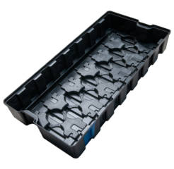

Termoformagem técnica com moldes de baixo custo. Peças de grande formato, embalagens blister e aplicações industriais com qualidade e precisão. Lead time reduzido de 15 a 45 dias.

O vacuum forming (ou termoformagem a vácuo) é um processo onde uma folha termoplástica é aquecida até o ponto de amolecimento e então conformada sobre um molde por meio de vácuo e/ou pressão de ar.
O processo permite a fabricação de peças de grande formato com excelente acabamento superficial, custos de ferramental significativamente menores que a injeção e lead times muito mais curtos – de 15 a 45 dias para novos moldes.
Ideal para volumes de até 3.000 unidades/ano, protótipos funcionais e peças de grande formato onde a injeção se torna inviável economicamente. O retalho de chapa é 100% reciclável, alinhado a princípios de economia circular.
Qual processo é ideal para o seu projeto? Use esta tabela comparativa para tomar a melhor decisão técnica e econômica.
| Critério | Injeção de Plásticos | Vacuum Forming |
|---|---|---|
| Custo do Molde | Alto (aço P20/H13) | Baixo (alumínio/resina) |
| Lead Time do Molde | 60 – 120 dias | 15 – 45 dias |
| Volume Ideal | > 5.000 peças/ano | 500 – 3.000 peças/ano |
| Geometrias Complexas | Sim – nervuras, insertos, roscas | Limitado – formas abertas |
| Espessura de Parede | Controlada e uniforme | Variável – menor nas quinas |
| Tamanho da Peça | Pequeno a médio porte | Ideal para grande formato |
| Transparência | Possível com PC/PMMA | Excelente com PETG/PC |
| Ciclo de Produção | Rápido (ciclo curto) | Médio |
| Tolerância Dimensional | ±0.1 – 0.3 mm (alta) | ±0.5 – 1.5 mm (média) |
| Sustentabilidade | Reutilização de canais | 100% reciclagem do retalho |
Embalagens transparentes para exposição e proteção de produtos. Ideais para brinquedos, eletrônicos, cosméticos, metais sanitários e produtos de consumo.
Painéis, carcaças, tampas e invólucros de grande porte para equipamentos industriais, médicos e de transporte que não seriam viáveis na injeção convencional.
Valide seu produto com um protótipo termoformado real antes de investir no molde de injeção. Rapidez e baixo custo para testes de mercado e aprovação de design.
Bandejas de apresentação, displays de ponto de venda e organizadores para varejo. Customizáveis em cor, material e geometria para fortalecer sua identidade visual.
Consulte nossos especialistas e descubra se o vacuum forming é a solução certa para o seu projeto. Orçamento sem compromisso.